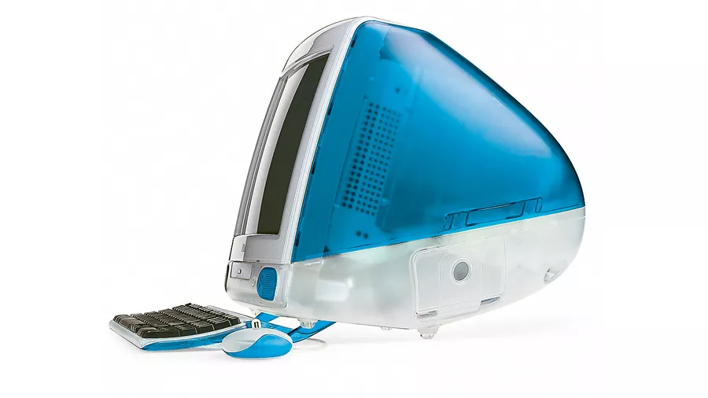
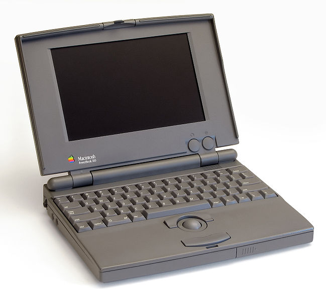
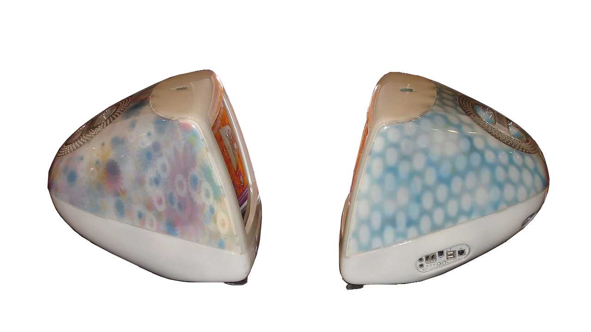
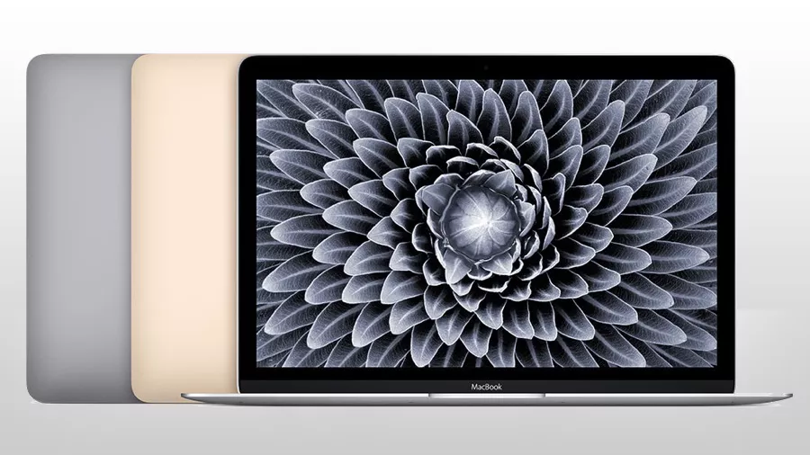

Introduction of the Macintosh

Apple Macintosh (1984); Source: MacHistory.net
- The Mac we know today was originally named the Macintosh, and it was introduced to the world on January 24, 1984. The year before, both Apple and IMB held a stead grasp on the computer industry, and they were the two top competitors in the computer industry. When 1984 rolled around however, IMB was the dominating force in the computer industry, and it seemed like no one could stop them. That was until Apple introduced their new desktop computer, the Macintosh. Apple truly believed the new product would be legendary, and used the phrase "you'll see why 1984 won't be like "1984."" Products like the Macintosh were still extraordinary for there time, as there were only two major products before it. The Apple II released in 1977 and the IBM PC released in 1981. Apple President Steve Jobs called the Macintosh "the third industry milestone prodcut" and said that it turned out "insanely great." Jobs's declaration of the third landmark industry milestone product turned out to be correct, as it was incredibly successful, which is what Apple needed after the complete failture of their busniess computer: the Apple Lisa. The Macintosh was meant to appeal to the masses, rather than just businessmen, which was a reason for its success. After the release of the Macintosh, the competition changed from the industry titan that was IMB to a partnership between Microsoft and Intel. Apple dropped the ball the next few years, as they failed to establish the Mac as an industry standard, and when Microsoft released Windows 3.0, that opportunity seemed to fade away.
Jobs's Return Revives the Mac
The original "Bondi Blue" iMac; Source: TechRadar.com
- Apple began falling off in 1992 when they released a series of underpowered Macs named Performas. The previously mentioned partnership of Microsoft and Intel and the release of Windows 3.0 made things even worse for Apple. Apple was losing its grasp on the market, as it was reported that Windows was being used by 25 million people. Apple was not completely done for, as they released a new set of Macs called the Power Macs in 1994. These Macs boasted the new PowerPC chip, making them much more powerful than what Apple had released before. While the Power Macs were selling well, other underwhelming Apple products alongside the growing popularity of Windows 95 and Intel's Pentium CPUs continued to stack the deck against Apple. In 1996, Apple bought Steve Jobs's company NeXT and its operating system. Steve Jobs had returned to Apple and in 1997 became the interim CEO of the company. Apple had too many products, too little customers, and were losing money. Steve Jobs said that he believed Apple could die if not given the proper attention. To solve their money problem, they convinced Bill Gates to buy $150 million worth of shares in Apple. Jobs got rid of the unecessary Apple products and began work on Rhapsody, the precursor to Mac OS X. In 1998, Apple released a product that took them back to their roots: the iMac. This all in one system featured a 15 inch screen, easy internet hookup, and usb ports. It was a huge sucess all over the world.
The PowerBooks
IDG/Danamania(CC BY-SA 3.0)
- When people think of Mac, most people think of the Macbook, but the laptop versions of the Macintosh did not start with the MacBook. Instead, they started with the Macintosh Portable. The Macintosh Portable was not very successful though, so Apple bounced back with a series of laptops that Apple named the PowerBook. The first PowerBook released by Apple was the PowerBook 100, which was released in 1991. The PowerBook 100 retailed for $2,500 and boasted a great set of features. The PowerBook 100 had a set-back keyboard, a palm rest, and instead of the trackpad that we are all used to using, it featured a trackball. The PowerBook 100 was a huge success for Apple, leading them to create more models of it. The PowerBook 500 released in 1994 and retailed for $2,270. It featured a 9.5 inch screen, a small upgrade from the PowerBook 100's 9 inch screen, built-in Ethernet, stereo speakers, and it replaced the trackball with the trackpad that we know today. The next installment in the PowerBook line was the PowerBook G3. The PowerBook G3 featured a massive increase in screen size, going from 9.5 inches to 14.1 inches. Retailing for $1,999, it also featured CD-ROM and DVD-ROM drives. The PowerBook Titanium G4 released in 2001 for $2,599. This version of the Powerbook is visually the most similar to the MacBooks we know today. The G4 in it's name comes from the PowerPC G4 Processor that the laptop comes with, and the titanium in the name comes from the laptop's titanium metal body. This PowerBook features a screen size increase from 14.1 inches to 15.2 inches.
Mac OS X
Wikimedia Commons (CC BY-SA 3.0)
- Mac OS X got off to a bit of a rocky start in 2000. Mac OS X looked goood initially, but it lacked features and was too slow. Apple's current products receive nothing more than some speed boosts and new colors. Apple's new product, the Power Mac G4 Cube, is a total flop, being too expensive and having cracks in its casing. Things kept getting worse with the release of Mac OS X 10.1 in 2001. It still lacked features and was so slow that the "spinning beach ball of death" that appeared when the computer froze or was experiencing difficulties became a common thing for many Mac users. Apple then released a new iMac with two awful designs. The Flower Power and Blue Dalmatian designs were so terrible that it kept many people from buying it. Apple begins to pick itself back up in 2002, with the release of a revamped iMac with a semi-spherical base and a flat screen supported by a chrome arm. 2002 also saw the release of Mac OS X 10.2 Jaguar which finally gave new features and speed boosts. In 2004, the iMac ditches its new design for an all-in-one design that puts the computer behind a flat LCD screen. This is the design that we know today. In 2006, Apple replaced the PowerPC chips they had been using since 1994 with Intel Core Duo processors. 2007 was a huge year for Apple, as they introduced the iPhone to the world. But they didn't forget about Mac, as Mac OS X 10.5 Leopard released that year and became their biggest selling OS X upgrade.
Mac in the Modern Era
Source: TechRadar.com
- In 2008, Apple announced that their Mac Pros will offer 8-core processing as a standard, and that their iMacs, MacBooks, and MacBook Pros would be faster. But their big announcement that year would be the MacBook Air, a lighter laptop with a multi-touch trackpad. The next year would feature the release of Mac OS X 10.6 Snow Leopard and the new 13.3 inch version of the MacBook Pro. 2010 sees the Mac App Store shine and the release of the MacBook Air. OS X Lion makes history with its release in 2011, as it is the first version of OS X to be released on a disc format. It was instead downloaded via the Mac App Store. OS X 10.8 Mountain Lion releases in 2012 and brings a more iOS-like style to the Mac. The MacBook Pro received a new Retina display along with HDMI ports. 2013 saw the release of OS X 10.9 Maverick and the Mac Pro. In 2015, Apple had a new vision for Macs with the new MacBook. The 2015 MacBook (and the MacBooks beyond) would have design elements from the newest iPhones and iPads. Apple released the iMac Pro in 2017. This was one of Apple's most powerful products, coming with 32 gigabytes of RAM, Intel Xeon processors, and an AMD Radeon Pro Vega 56 graphics card. It was also one of the most expensive products Apple ever released, as just the base model retailed for $4,999. Apple upgraded many of their products in 2018, including giving the MacBook Air a thinner design with a better screen.